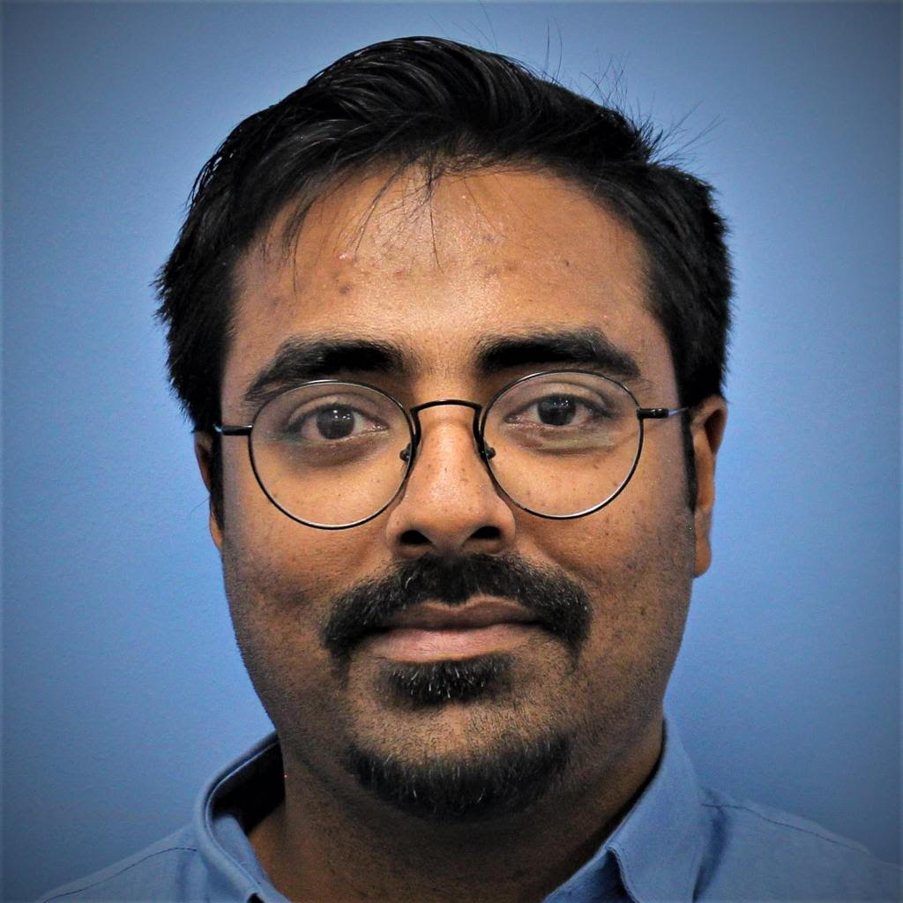

Arnab Acharya
Ph.D. in Power Electronics, Arizona State University
Research Overview
I am a Ph.D. researcher in Power Electronics at Arizona State University, working on power electronics and grid-forming inverter control for renewable-rich power systems. My current research focuses on dispatchable virtual oscillator control, fault ride-through, current limiting, and stability of grid-forming inverters under adverse grid conditions.
My work combines nonlinear control design, electromagnetic transient simulation, embedded implementation, and experimental validation on high-power three-phase SiC/IGBT inverter platforms. I am especially interested in practical control and protection methods that allow inverter-based resources to behave reliably during large grid disturbances.
Research Highlights
Fault-resilient GFM control
Current limiting and LVRT strategies for dVOC-based grid-forming inverters during severe grid disturbances.
High-power inverter validation
Simulation and implementation of three-phase SiC/IGBT inverter systems for grid-forming applications.
Soft-switching converters
Topology and hardware design for high-efficiency SiC/GaN power converters and data-center power delivery.
Grid-Forming Inverter Control and Fault Ride-Through
dVOC · LVRT · IEEE 2800 · high-power inverter control
I study control and protection methods for grid-forming inverters operating under large grid transients, frequency deviations, and voltage sag conditions. The goal is to maintain voltage-source behavior while keeping inverter current within safe and standards-compliant limits.
Negative-Sequence Current Control under Asymmetrical Grid Conditions
Unbalanced faults · sequence control · grid-forming inverters
My work includes dual-dVOC based control methods for negative-sequence current injection, targeting improved inverter behavior under asymmetrical grid conditions without losing the core benefits of grid-forming operation.
Fast-Transient DC-DC Converters for Data-Center Applications
48 V to PoL converters · GaN hardware · dynamic bus voltage reconfiguration
During my master's research, I developed dynamic bus voltage reconfiguration techniques for two-stage multi-phase buck converters, aimed at improving load-transient and reference-transient performance while reducing output capacitance.
Selected Publications
-
Dynamic Bus Voltage Reconfiguration in a Two-Stage Multi-Phase Converter for Fast TransientsA. Acharya, V. Inder Kumar, and S. Kapat · IEEE Journal of Emerging and Selected Topics in Power Electronics, 2021
-
Dual-dVOC Based Controlled Negative Sequence Current Injection for Grid-Forming Inverters under Asymmetrical Grid ConditionsA. Acharya and R. Ayyanar · IEEE Power & Energy Society General Meeting, 2023
-
Enhancing Stability of dVOC Controlled Grid-Forming Inverters Under Large Grid Transients - A Power Angle Based ApproachA. Acharya and R. Ayyanar · IEEE Energy Conversion Congress and Exposition, 2023
-
Dynamic Bus Voltage Configuration in a Two-Stage Multi-Phase Buck Converter to Mitigate TransientsA. Acharya, V. I. Kumar, and S. Kapat · IEEE Applied Power Electronics Conference and Exposition, 2019
Experience
-
Graduate Application Intern · OnsemiAutomotive Traction Solution Group · May-August 2024
SiC device characterization, double-pulse testing, loss modeling, gate-driver PCB testing, and traction-inverter protection.
-
Graduate Intern · National Renewable Energy LaboratoryElectric Vehicle Grid Integration Team · May-August 2023
Battery systems, multi-chemistry EV/BTMS battery stacks, and active cell balancing using a dual-active-bridge converter platform.
-
Engineer · Mercedes-Benz Research & Development IndiaTechnical Compliance Management System Team · February 2020-July 2021
EV onboard-charger development, DC network optimization, and automotive technical compliance.
Awards and Service
Professional Education Seminar, APEC 2024: Conducted a seminar on PV inverter design, including topologies, control, and system considerations.
Best Presentation Award, APEC 2019: Recognized for work presented in the “Converters for Data Centers” lecture session.
Reviewer Service: IEEE Transactions on Power Electronics, IEEE Journal of Emerging and Selected Topics in Industrial Electronics, and IEEE Transactions on Circuits and Systems II.